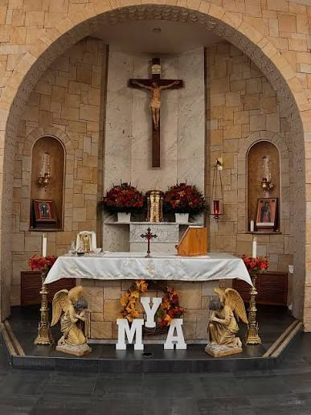

One of the first Maronite parishes in North America, Saint Maron has been at home in South Philadelphia since 1892 and celebrated its 125th anniversary on Saturday, December 2, 2017. All are welcome at the table of the Lord.

Founded by Lebanese immigrants at the close of the nineteenth century, Saint Maron has been a spiritual home for generations of families in South Philadelphia. We worship in the ancient Maronite tradition — one of the Eastern Catholic Churches in full communion with Rome — with a liturgy whose roots reach back to the earliest Christian communities of Antioch.
Whether your family has been here for a hundred years or you are stepping inside for the first time, you belong here.
Your generosity sustains our liturgies, our building, and our outreach to the community.